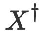
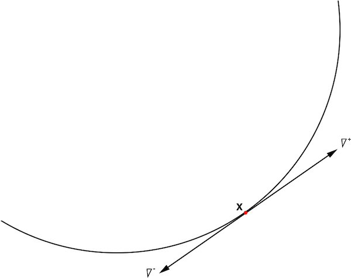
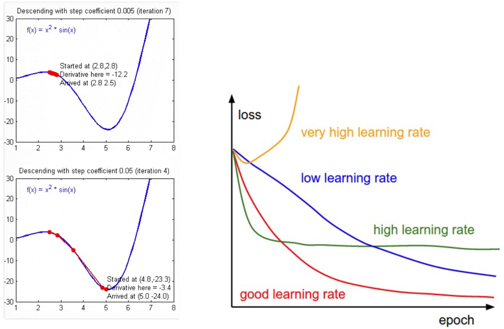
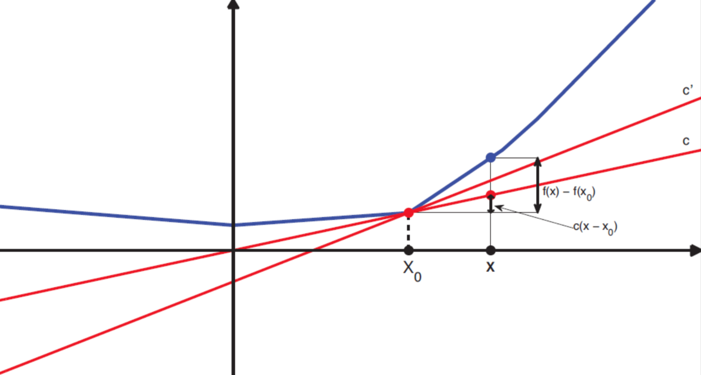

ML入门-线性回归三种求解
ML入门-线性回归三种求解
1. 解析法
在给定正则参数（超参数）λ 的情况下，目标函数的最优解为：$\hat{W} = \arg_W \min J(W)$，满足最优解的必要条件即一阶导数为零：$\dfrac {\partial J(W)} {\partial W} = 0$。
1.1 OLS最优解析解
1.1.1 正规方程组
对 OLS 目标函数矩阵形式展开：
$$
\begin{aligned}
J(W) &= ||y - X W||^2_2 = (y - X W)^T (y - X W)
\\
&= y^T y - y^T X W - W^T X^T y + W^T X^T X W
\end{aligned}
$$
根据矩阵的转置运算有：$A^T B = B^T A$，也即 $y^T X W = W^T X^T y$，因此上式等价于：
$$
J(W) = y^T y - 2 W^T X^T y + W^T X^T X W
$$
因此满足 OLS 最优解即：
$$
\begin{aligned}
&\dfrac {\partial J(W)} {\partial W} = 0
\\
\Longrightarrow \quad &\dfrac { \partial (y^T y - 2 W^T X^T y + W^T X^T X W)} { \partial W } = 0 \quad（0 矩阵）
\end{aligned}
$$
根据矩阵的微分运算有：
$
\begin{aligned}
&① \quad \dfrac {\partial (A^T B)} {\partial A} = B
\\
&② \quad \dfrac {\partial (A^T B A)} {\partial A} = (B^T + B) A
\end{aligned}
$
进而得到下式：
$$
0 - 2 X^T y + [ (X^T X)^T + (X^T X) ] W = 0
$$
根据矩阵的运算法则有：
$
\begin{aligned}
\because \quad &X^T X = (X)^T (X^T)^T = (X^T X)^T
\\
\therefore \quad &X^T X 为对称矩阵
\\
\Longrightarrow \quad &X^T X = (X^TX)^T
\end{aligned}
$
进一步合并得：
$$
\begin{aligned}
&-2 X^T y + 2 X^T X W = 0
\\
&\Longrightarrow X^T X W = X^T y \quad （正规方程组）
\\
&\Longrightarrow \hat{W}_{OLS} = (X^T X)^{-1} X^T y
\end{aligned}
$$
这种求解方式也称为用正规方程组解析求解最小二乘线性回归。但在解析 $ \hat{W}_{OLS} $ 的过程中涉及到了逆矩阵的计算，应当避免。
1.1.2 Moore-Penrose广义逆
通常，训练的目标是 OLS 目标函数 $J(W) = ||y - XW||^2_2$ 最小，通俗来讲也即 $y$ 与 $X W$ 越接近越好，最好的情况即求解：$y = X W$。
（1）假如 $X$ 为方阵，则可以求其逆：$W = X^{-1} y$，
（2）假如 $X$ 不为方阵，则求其逆矩阵无意义，可求 Moore-Penrose 广义逆：$W = X^+ y$
广义逆的符号为：

LaTeX 代码为
X^{\dag}，但 Hexo 不支持引入宏包无法显示，因此使用 $X^+$ 代替。
Moore-Penrose 广义逆可采用奇异值分解（Singular Value Decomposition, SVD）实现：
$
\begin{aligned}
&若有：X = U \Sigma V^T,
\\
&其中 U, V 为正交阵，\Sigma 为对角阵（不一定为方阵）
\\
&则：X^+ = V \Sigma^+ V^T
\end{aligned}
$
对角阵 $\Sigma$ 求伪逆，则将非零元素求倒数即可：
$$
\Sigma = \left(
\begin{matrix}
\lambda_1 & 0 & \cdots & 0
\\
0 & \lambda_2 & \cdots & 0
\\
\vdots & \vdots & \ddots & \vdots
\\
0 & 0 & \cdots & 0
\\
\end{matrix}
\right),
\Sigma^+ = \left(
\begin{matrix}
\dfrac 1 \lambda_1 & 0 & \cdots & 0
\\
0 & \dfrac 1 \lambda_2 & \cdots & 0
\\
\vdots & \vdots & \ddots & \vdots
\\
0 & 0 & \cdots & 0
\\
\end{matrix}
\right),
$$
这也是 Scikit-Learn 中 LinearRegression 推荐的求解方式。
1.2 Ridge最优解析解
Ridge 比 OLS 多一个 L2 正则，目标函数为：
$$
\begin{aligned}
J(W) &= ||y - X W||^2_2 + \lambda ||W||^2_2
\\
&= (y - X W)^T (y - X W) + \lambda W^T W
\end{aligned}
$$
其最优解也采用 SVD 分解的方式实现。求解偏导数等于零：
$$
\begin{aligned}
\dfrac {\partial J(W)} {\partial W} &= -2 X^T y + 2 (X^T X) W + 2 \lambda W = 0
\\
\Longrightarrow \hat{W}_{Ridge} &= (X^T X + \lambda I)^{-1} X^T y
\\
&（其中 I 为 D \times D 的单位阵）
\end{aligned}
$$
对比 OLS 的解：
$$
\hat{W}_{OLS} = (X^T X)^{-1} X^T y
$$
对 Ridge 的解进行变形，配出一个 $\hat{W}_{OLS}$：
$$
\begin{aligned}
\hat{W}_{Ridge} &= (X^T X + \lambda I)^{-1} X^T y
\\
&= (X^T X + \lambda I)^{-1} (X^T X) (X^T X)^{-1} X^T y
\\
&= (X^T X + \lambda I)^{-1} (X^T X) \hat{W}_{OLS}
\end{aligned}
$$
将 $(X^T X + \lambda I)^{-1}$ 看成是分母，将 $(X^T X)$ 看成分子，由于 $(X^T X + \lambda I) > (X^T X)$，因此有 $\hat{W}_{Ridge} < \hat{W}_{OLS}$。
因此 $\hat{W}_{Ridge} $ 在 $ \hat{W}_{OLS}$ 的基础上进行了收缩，L2 正则也称为权重收缩。
1.3 总结
（1）OLS 的解为：$\hat{W}_{OLS} = (X^T X)^{-1} X^T y$，需要对矩阵 $X^T X$ 求逆。
- 当输入特征存在共线性（某些特征可以用其他特征的线性组合表示），矩阵 X 是接近不满秩，矩阵 $X^T X$ 接近奇异，求逆不稳定。
（2）Ridge 的解为：$\hat{W}_{Ridge} = (X^T X + \lambda I)^{-1} X^T y$，需要对矩阵 $(X^T X + \lambda I)$ 求逆。
- 即使输入特征存在共线性，矩阵 $X$ 不满秩，矩阵 $X^T X$ 对角线存在等于 0 或接近于 0 的元素，但 $0 + \lambda \ne 0$，$(X^T X + \lambda I)$ 求逆仍可得到稳定解。因此岭回归 Ridge 在输入特征存在共线性的情况仍然能得到稳定解。
（3）Lasso 无法无法求得解析解，可以用迭代求解。
2. 梯度下降法
2.1 梯度下降法思想
解析求解法对 N x D 维矩阵 X 进行 SVD 分解的复杂度为：$O(N^2 D)$。
- 当样本数 N 很大或特征维度 D 很大时，SVD 计算复杂度高，或机器的内存根本不够。
- 可采用迭代求解的方法：梯度下降法、随机梯度下降法、次梯度法、坐标轴下降法等。
- 梯度下降法（Gradient Descent）是求解无约束优化问题最常采用的方法之一。
在微积分中，一元函数 $f(x)$ 在 $x$ 处的梯度为函数在该点的导数 $\dfrac {df} {dx}$。
对应在多元函数 $f(x_1, ..., x_D)$ 中，在点 $x = (x_1, ..., x_D)$ 处共有 D 个偏导数：$\dfrac {\partial f} {\partial x_1}, ..., \dfrac {\partial f} {\partial x_D}$。将这 D 个偏导数组合成一个 D 维的矢量 $(\dfrac {\partial f} {\partial x_1}, ..., \dfrac {\partial f} {\partial x_D})^T$，即称为函数 $f(x_1, ..., x_D)$ 在点 $x$ 处的梯度，一般记为 $\nabla$ 或 $grad$，即：
$$
\nabla f(x_1, ..., x_D) = grad \ f(x_1, ..., x_D) = (\dfrac {\partial f} {\partial x_1}, ..., \dfrac {\partial f} {\partial x_D})^T
$$
（1）从几何意义上讲，某点的梯度是函数在该点变化最快的地方。
（2）沿着梯度方向，函数增加最快，更容易找到函数的最大值
（3）沿负梯度方向，函数减少最快，更容易找到函数的最小值。
$\nabla$ 发音为 nabla，表示微分，不属于希腊字符，只是一个记号。
正负梯度的例子如下：

在计算 $f(x)$ 的最小值时，当函数形式比较简单且数据量小，可用解析计算 $ f'(x) = 0 $，否则可用迭代法求解：
（1）从 t = 0 开始，随机寻找一个值 $x^{t = 0}$ 为初始值；
（2）找到下一个点 $x^{t + 1}$，使得函数值越来越小，即 $f(x^{t + 1}) < f(x^t)$；
（3）重复，直到函数值不再见小，则已经找到函数的 局部极小值。
该方法仅能找到局部极小值。
为此，可以对该迭代方案进行改进：
- 随机寻找初始值时，初始化多个点；
- 最后从多个局部极小值中取最小的作为最终的极小值。
2.2 梯度下降法数学解释
对函数 $f(x)$ 进行一节泰勒展开得到：
$$
f(x + \Delta x) \approx f(x) + \Delta x \nabla f(x)
$$
要找到函数的最小值，也即每一次步进 $\Delta x$ 后的函数值均小于原函数值，因此有：
$$
\begin{aligned}
& f(x + \Delta x) < f(x)
\\
\Longrightarrow & \Delta x \nabla f(x) < 0
\end{aligned}
$$
假设令 $\Delta x = - \eta \nabla f(x), \ \ (\eta > 0)$，其中步长 $\eta$ 为一个较小的正数，从而有：
$$
\Delta x \nabla f(x) = - \eta \left( \nabla f(x) \right)^2 < 0
$$
令 $\Delta x = - \eta \nabla f(x)$ 即可确保 $\left( \nabla f(x) \right)^2 > 0$。
因此，对 $x$ 的更新为：$x^{t + 1} = x + \Delta x = x^t - \eta \nabla f(x)$，也即 $x$ 向负梯度方向 $- \eta \nabla f(x)$ 移动步长 $\eta$，会使得$f(x^{t + 1}) < f(x^t)$，$\eta$ 也称为学习率。
由于只对 $f(x)$ 进行一阶泰勒展开，因此梯度下降法是一阶最优化算法。
2.3 OLS的梯度下降
OLS 的目标函数为：
$$
\begin{aligned}
J(W) &= \sum^N_{i = 1} (y_i - W^T X_i)^2
\\
&= ||y - X W||^2_2
\\
&= (y - X W)^T (y - X W)
\end{aligned}
$$
其梯度为：
$$
\nabla J(W) = -2 X^T y + 2 X^T X W = -2 X^T (y - X W)
$$
梯度下降：
$$
\begin{aligned}
W^{t + 1} &= W^t - \eta \nabla J(W^t)
\\
&= W^t + 2 \eta X^T (y - X W^T)
\end{aligned}
$$
其中 $(y - X W^T)$ 即为预测残差 r，说明参数的更新量与输入 X 和预测残差 r 的相关性有关。$X^T$ 与 r 的相关性较强时需要把 $\eta$ 调大一些，则 r 逐渐与输入 $X^T$ 无关，直到无需再更新 W。
OLS 的梯度下降过程：
（1）从 t = 0 开始，随机寻找一个值 $W^{t = 0}$ 为初始值（或 0）；
（2）计算目标函数 $J(W)$ 在当前值的梯度：$\nabla J(W^t)$；
（3）根据学习率 $\eta$，更新参数：$W^{t + 1} = W^t - \eta \nabla J(W^t)$；
（4）判断是否满足迭代终止条件。若满足，循环结束并返回最佳参数 $W^{t + 1}$ 和目标函数极小值 $J(W^{t + 1})$，否则跳转至第 2 步。
迭代终止条件有：
（1）迭代次数达到预设的最大次数。
（2）迭代过程中目标函数的变化值小于预设值：$\dfrac{J(W^t) - J(W^{t + 1})}{J(W^t)} \le \varepsilon$。
2.4 Ridge的梯度下降
Ridge 的目标函数为：
$$
\begin{aligned}
J(W) &= \sum^N_{i = 1} (y_i - W^T X_i)^2 + \lambda \sum^D_{j = 1} w^2_j
\\
&= ||y - X W||^2_2 + \lambda ||W||^2_2
\end{aligned}
$$
其梯度为：
$$
\nabla J(W) = -2 X^T y + 2 X^T X W + 2 \lambda W
$$
Ridge 的梯度下降过程与 OLS 的相同。
2.5 Lasso次梯度法
Lasso 的目标函数为：
$$
\begin{aligned}
J(W) &= \sum^N_{i = 1} (y_i - W^T X_i)^2 + \lambda \sum^D_{j = 1} |W_j|
\\
&= ||y - X W||^2_2 + \lambda ||W||_1
\end{aligned}
$$
绝对值函数 &||W||_1& 在原点 $W = 0$ 处不可导，无法使用梯度下降求解。
（1）可用次梯度概念替换梯度，得到次梯度法。
（2）或用坐标轴下降求解。
2.6 梯度下降的实用Tips
（1）梯度下降中的学习率 η 需要小心设置。太大可能引起目标函数震荡，太小收敛速度过慢，可以采用自适应学习率的方案：

（2）梯度下降对特征的取值范围敏感，建议对输入特征 X 做去量纲处理（可用 sklearn.preprocessing.StandardScaler 实现）：
$$
W^{t + 1} = W^t + 2 \eta X^T (y - X W^t) \ \ \ \ （与输入 X 的取值有关）
$$
梯度下降算法延伸阅读：Introduction to Gradient Descent Algorithm (along with variants) in Machine Learning
2.7 随机梯度下降
在机器学习模型中，目标函数形式为：
$$
J(W) = \sum^N_{i = 1} L \left( y_i, f(X_i; W) \right) + \lambda R(W)
$$
梯度形式为：
$$
\nabla J(W^t) = \sum^N_{i = 1} \nabla L \left( y_i, f(X_i; W^t) \right) + \lambda \nabla R(W^t)
$$
当样本中存在信息冗余（正负抵消或梯度相似）时效率不高，因此可以使用随机梯度下降，即每次梯度下降更新时只计算一个样本上的梯度：
$$
\nabla J(W^t) = \nabla L \left( y_t, f(X_t; W^t) \right) + \lambda \nabla R(W^t)
$$
通俗而言，每一次迭代时，随机选择一个样本，向该样本的负梯度方向移动一步。梯度下降法每一次迭代都需要计算所有样本的梯度，随机梯度下降每一次迭代仅需计算单个样本的梯度：
（1）为了确保收敛，相比于同等条件下的梯度下降，随机梯度下降需要采用更小的步长和更多的迭代轮数。
（2）相比于非随机算法，随机梯度下降在前期的迭代效果卓越。
小批量梯度下降法：介于一次使用所有样本（批处理梯度下降）和一次只是用一个样本（随机梯度下降）之间，也即在随机梯度下降中，每次使用一个小批量的样本代替单个样本。实践中常采用小批量样本（mini-batch）下降。
随机梯度下降参考文章：
① "Stochastic Gradient Descent" L. Bottou - Website, 2010
② "The Tradeoffs of Large Scale Machine Learning" L. Bottou - Website, 2011
2.8 Ridge和SGDRegressor
2.8.1 Ridge
1 | # class sklearn.linear_model.Ridge |
（1）其中与优化计算有关的参数如下：
max_iter: 共轭梯度求解器的最大迭代次数。对于优化算法 solver 为 'sparse_cg' 和 'lsqr'，则默认值由
scipy.sparse.linalg确定，对于 'sag' 求解器，默认值为 1000。tol: 解的精度，判断迭代收敛与否的阈值。当（loss > previous_loss - tol）时迭代终止。
solver: 求解最优化问题的算法。可取：'auto'，'svd'，'cholesky'，'lsqr'，'sparse_cg'，'sag'，'saga'。
random_state: 数据洗牌时的随机种子。仅用于 'sag' 求解器。
（2）其中求解器 solver 可选的算法如下：
auto: 根据数据类型自动选择求解器。默认算法。
svd: 使用 X 的奇异值分解来计算 Ridge 系数。对于奇异矩阵，比 'cholesky' 更稳定。
cholesky: 使用标准的scipy.linalg.solve函数获得解析解。sparse_cg: 使用scipy.sparse.linalg.cg中的共轭梯度求解器。对大规模数据，比“cholesky”更合适。
lsqr: 使用专用的正则化最小二乘常数scipy.sparse.linalg.lsqr。速度最快。
sag: 使用随机平均梯度下降。当样本数 n_samples 和特征维数 n_feature 都很大时，通常比其他求解器更快。
saga: 'sag' 的改进算法。当
fit_intercept为True时，'sag’ 和 'saga' 只支持稀疏输入。'sag' 和 'saga' 快速收敛仅在具有近似相同尺度的特征上被保证，因此数据需要标准化。
2.8.2 SGDRegressor
Scikit-Learn 中实现了随机梯度下降回归：SGDRegressor，其对大数据量训练集（n_sample > 10000）的回归问题合适。
SGDRegressor 的目标函数为：
$$
J(W) = \dfrac {1} {N} \sum^N_{i = 1} L \left( y_i, f(X_i) \right) + \alpha R(W)
$$
1 | # class sklearn.linear_model.SGDRegressor |
（1）参数 loss 支持的损失函数包括：
squared_loss: L2 损失。huber: Huber 损失。epsilon_insensitive: ɛ 不敏感损失 (如：SVM)squared_epsilon_insensitive
（2）参数 penalty 支持的正则函数包括：
none: 无正则l2: L2正则l1: L1正则elasticnet: L1 正则 + L2 正则（配合参数l1_ratio为 L1 正则的比例）
（3）参数 epsilon 是某些损失函数（huber、epsilon_insensitive、squared_epsilon_insensitive）需要的额外参数。
（4）参数 alpha 是正则惩罚系数，也用于学习率计算。
（5）优化算法有关的参数包括：
max_iter: 最大迭代次数（访问训练数据的次数，Epoches 的次数），默认值 5。一个迭代循环只使用一个随机样本的梯度，并且循环所有的样本，则称为一个 Epoches。SGD 在接近 $10^6$ 的训练样本时收敛。因此可将迭代数设置为 np.ceil($10^6$ / 𝑁)，其中 𝑁 是训练集的样本数目。参数
n_iter意义相同，已被抛弃。tol: 停止条件。如果不为 'None'，则当（loss > previous_loss - tol）时迭代终止。
shuffle: 每轮 SGD 之前是否重新对数据进行洗牌。random_state: 随机种子，Scikit-Learn 中与随机有关的算法均有此参数，含义相同。当参数
shuffle == True时使用。如果随机种子相同，每次洗牌得到的结果一样。可设置为某个整数以复现结果。learning_rate: 学习率。支持 3 种选择：
- 'constant'：$\eta = \eta_0$。
- 'optimal'：$\eta = 1.0 / \alpha * (t + t_0)$，分类任务中随机梯度下降默认值。
- 'invscaling'：$\eta = \eta_0 / pow(t, \ power_t)$，回归任务重随机梯度下降默认值。
warm_start: 是否从之前的结果继续。随机梯度下降中初始值可以是之前的训练结果，支持在线学习，即可以在原来的学习基础上继续学习新加入的样本并更新模型参数（输出）。初始值可在
fit函数中作为参数传递。average: 是否采用平均随机梯度下降法（ASGD）。
3. 次梯度法
3.1 什么是次梯度法
当函数可导时，梯度下降法是非常有效的优化算法。但 Lasso 的目标函数为：$J(W) = ||y - X W||^2_2 + \lambda ||W||_1$，其中正则项 $||W||_1$ 为绝对值函数，在 $W_j = 0$ 处不可导，无法计算梯度，也无法用梯度下降法求解。因此需要将梯度扩展为次梯度，用次梯度法求解该问题。
为了处理不平滑函数，扩展导数的表示。定义一个凸函数 $f$ 在点 $x_0$ 处的 次导数 为一个标量 g，使得：
$
f(x) - f(x_0) \ge g(x - x_0), \forall x \in \mathrm{I}
$
其中 $\mathrm{I}$ 为包含 $x_0$ 的某个区间。如下图所示，对于定义域中的任何 $x_0$，总可以做一条直线通过点 $(x_0, f(x_0))$，且直线要么接触 $f$，要么在其下方：

上式等价于：
$
\Delta f(x) \ge g \Delta x \Rightarrow g \le \dfrac {\Delta f(x)} {\Delta x}
$
从该直线方程可知，$g$ 也就是在直线 $y = f(x_0)$ 下方的直线的斜率，所有 $g$ 的解（斜率）都称为函数的次导数（Subderivative），所有次导数（$g$ 的解）的集合称为函数 $f$ 在 $x_0$ 处的次微分（Subdifferential），记为 $\partial f(x_0)$。
次微分是次导数的集合，定义该集合为区间 $[a, b]$：
$$
a = \lim_{x \rightarrow x^-_0} \dfrac {f(x) - f(x_0)} {x - x_0}, \quad b = \lim_{x \rightarrow x^+_0} \dfrac {f(x) - f(x_0)} {x - x_0}
$$
也即 $x_0$ 点的次微分的集合左边界 $a$ 是从点 $x_0$ 的左侧逼近函数值，右边界 $b$ 是从点 $x_0$ 的右侧逼近函数值。当函数在 $x_0$ 处可导时，该点的次微分只有一个点组成，也就是函数在该点的导数。
例如求凸函数 $f(x) = |x|$ 的次微分，由于 $f(x)$ 在点 $x = 0$ 处不可导，因此该点的次微分区间左边界为 $f(0^-) = -1$，右边界为 $f(0^+) = 1$：
$$
\partial f(x) = \left \{
\begin{aligned}
\{ -1 \}, && {x < 0}
\\
[-1, +1], && {x = 0}
\\
\{ +1 \}, && {x > 0}
\end{aligned}
\right.
$$
若求解多维点的次微分，则分别求解每个分量的次微分并组成向量，即作为函数在该点的次梯度。
3.2 梯度法与次梯度法的区别
对可导函数，最优解的条件为 $f(x) = 0$，对此类仅局部可导，需要使用次微分的函数，最优解的条件为：
$
0 \in \partial f(x^) \Longleftrightarrow f(x^) = \min_x f(x)
$
当且仅当 0 属于函数 $f$ 在点 $x^$ 处次梯度集合时，$x^$ 为极值点。当然，因为函数在可导的点的次微分等于其导数，因此该条件可扩展到全局可导函数。
Python 可用
numpy.sign函数实现绝对值函数的次梯度。
将梯度下降法中的梯度换成次梯度就得到次梯度法：
| 梯度下降法 | 次梯度法 |
|---|---|
| 1. 从 $t = 0$ 开始，初始化 $w^0$ | 1. 从 $t = 0$ 开始，初始化 $w^0$ |
| 2. 计算目标函数 $J(W)$ 在当前值的梯度：$\nabla J(W^t)$ | 2. 计算目标函数 $J(W)$ 在当前值的次梯度：$\partial J(W^t)$ |
| 3. 根据学习率 $\eta$ 更新参数：$W^{t + 1} = W^t - \eta \nabla J(W^t)$ | 3. 根据学习率 $\eta$ 更新参数：$W^{t + 1} = W^t - \eta \partial J(W^t)$ |
| 4. 判断是否满足迭代总之条件，如果满足，循环结束并返回最佳参数 $W^{t + 1}$ 和目标函数极小值 $J(W^{t+ 1})$，否则跳转到第 2 步 | 判断是否满足迭代总之条件，如果满足，循环结束并返回最佳参数 $W^{t + 1}$ 和目标函数极小值 $J(W^{t+ 1})$，否则跳转到第 2 步 |
结论：
与梯度下降算法不同，次梯度算法并不是下降算法（每次对参数的更新，并不能保证目标函数单调递减）。因此一般情况下会从多个点同时应用次梯度法，最后选择最小值：
$$
f(x^*) = \min_{1, ..., t} f(x^t)
$$
虽然次梯度法不能保证迭代过程中目标函数保持单调下降，但可以证明，满足一定条件的凸函数，次梯度法可以保证收敛，只是收敛速度比梯度下降法慢。因此 Lasso 通常使用 坐标轴下降法 求解。
4. 坐标轴下降法求解
次梯度法收敛速度慢，Lasso 求解推荐使用坐标轴下降法。
坐标轴下降法即：沿着坐标轴方向搜索。和梯度下降法与随机梯度下降法的概念类似，例如对 D 维样本参数 $W_0, ..., W_D$，坐标轴下降法是每次仅对其中一个 $W_j$ 搜索最优值。循环使用不同的坐标轴（不同维度），一个周期的以为搜索迭代过程相当于一个梯度迭代。
坐标轴下降发利用当前坐标系统进行搜索，无需计算目标函数的导数，只按照某一坐标方向进行搜索最小值，而梯度下降法验目标函数的负梯度方向搜索，因此梯度方向通常不与任何坐标轴平行。
坐标轴下降法在系数矩阵上的计算速度非常快。
4.1 Lasso坐标轴下降的数学解释
Lasso 的目标函数为：$J(W) = ||y - X W||^2_2 + \lambda ||W||_1$。
将 Lasso 目标函数中的损失和及正则项分别应用坐标轴下降法搜索，每次仅搜索一个维度。定义 $w_{-j}$ 为 $W$ 去掉 $w_j$ 后的剩余 $(D - 1)$ 维向量。
（1）对 RSS 的第 j 维坐标轴下降（可导，直接计算梯度）：
$$
\begin{aligned}
\dfrac {\partial} {\partial w_j} RSS(W) &= \dfrac {\partial} {\partial w_j} \sum^N_{i = 1} (y_i - W^T X_i)^2
\\
&= \dfrac {\partial} {\partial w_j} \sum^N_{i = 1} (y_i - (W^T_{-j} X_{i, -j} + w_j x_{ij}))^2
\\
&= \dfrac {\partial} {\partial w_j} \sum^N_{i = 1} (y_i - W^T_{-j} X_{i, -j} - w_j x_{ij})^2
\\
（复合函数求导） &= -2 \sum^N_{i = 1} (y_i - W^T_{-j} X_{i, -j} - w_i x_{ij}) \cdot x_{ij}
\\
&= 2 \sum^N_{i = 1} x^2_{ij} w_j - 2 \sum^N_{i = 1} x_{ij} (y_i - W^T_{-j} X_{i, -j})
\\ \\
令：a_j &= 2 \sum^N_{i = 1} x^2_{ij}, \quad c_j = \sum^N_{i = 1} x_{ij} (y_i - W^T_{-j} X_{i, -j})
\\ \\
\Longrightarrow \dfrac {\partial} {\partial w_j} RSS(W) &= a_j w_j - c_j
\end{aligned}
$$
（2）再对 $R(W)$ 的第 j 维坐标轴下降（计算次梯度）：
$$
\dfrac {\partial} {\partial w_j} R(W) = \dfrac {\partial} {\partial w_j} \lambda |w_j| =
\left \{
\begin{aligned}
& \dfrac {\partial} {\partial w_j} (- w_j \lambda) = \{ - \lambda \}, && {w_j < 0}
\\
& [- \lambda, + \lambda], && {w_j = 0}
\\
& \dfrac {\partial} {\partial w_j} (w_j \lambda) = \{ \lambda \}, && {w_j > 0}
\end{aligned}
\right.
$$
（3）合并为对 $J(W, \lambda)$ 的第 j 维坐标轴下降：
$$
\begin{aligned}
& \dfrac {\partial} {\partial w_j} J(W, \lambda) = \dfrac {\partial} {\partial w_j} (RSS + R(W))
\\
&= \left \{
\begin{aligned}
& \{ a_j w_j - c_j - \lambda \}, && {w_j < 0}
\\
& [a_j w_j - c_j - \lambda, a_j w_j - c_j + \lambda] = [- c_j - \lambda, - c_j + \lambda], && {w_j = 0}
\\
& \{ a_j w_j - c_j + \lambda \}, && {w_j > 0}
\end{aligned}
\right.
\end{aligned}
$$
（4）最优解需满足：$0 \in \dfrac {\partial} {\partial w_j} J(W, \lambda)$，对于可导部分，则为 $0 = \dfrac {\partial} {\partial w_j} J(W, \lambda)$：
$$
\Longrightarrow \left \{
\begin{aligned}
& 0 = a_j w_j - c_j - \lambda, && {w_j < 0}
\\
& 0 \in [- c_j - \lambda, - c_j + \lambda], && {w_j = 0}
\\
& 0 = a_j w_j - c_j + \lambda, && {w_j > 0}
\end{aligned}
\right.
$$
其中：
$
\begin{aligned}
& 0 \in [- c_j - \lambda, - c_j + \lambda]
\\
& \Longrightarrow \left \{
\begin{aligned}
0 \ge - c_j - \lambda
\\
0 \le - c_j + \lambda
\end{aligned}
\right.
\\
& \Longleftrightarrow c_j \in [- \lambda, \lambda]
\end{aligned}
$
由于 $a_j = 2 \sum^N_{i = 1} x^2_{ij} > 0$，
① 当 $w_j < 0$ 时有：
$
\begin{aligned}
& 0 = a_j w_j - c_j - \lambda
\\
& w_j = \dfrac {c_j + \lambda} {a_j} < 0
\\
& \Longrightarrow c_j < - \lambda
\end{aligned}
$
② 同理，当 $w_j > 0$ 时有：
$
\begin{aligned}
& 0 = a_j w_j - c_j + \lambda
\\
& w_j = \dfrac {c_j - \lambda} {a_j} > 0
\\
& \Longrightarrow c_j > \lambda
\end{aligned}
$
因此可以转换为下式：
$$
\hat{w_j}(c_j) = \left \{
\begin{aligned}
& \dfrac {c_j + \lambda} {a_j}, && {c_j < - \lambda}
\\
& 0, && {c_j \in [- \lambda, \lambda]}
\\
& \dfrac {c_j - \lambda} {a_j}, && {c_j > \lambda}
\end{aligned}
\right.
$$
4.2 Lasso坐标轴下降步骤
由于 $a_j = 2 \sum^N_{i = 1} x^2_{ij}$ 对于已知的输入 $X$ 是可以预计算的，因此 Lasso 坐标轴下降的步骤如下：
① 预计算 $a_j = 2 \sum^N_{i = 1} x^2_{ij}$
② 初始化参数 $W$（全 0 或随机）
③ 选择变化幅度最大的维度、或随机选择、或轮流选择需要更新的参数 $w_j$
④ 计算 $c_j = \sum^N_{i = 1} x_{ij} (y_i - W^T_{-j} X_{i, -j})$
⑤ 计算 $\hat{w_j}(c_j) = \left \{
\begin{aligned}
& \dfrac {c_j + \lambda} {a_j}, && {c_j < - \lambda}
\\
& 0, && {c_j \in [- \lambda, \lambda]}
\\
& \dfrac {c_j - \lambda} {a_j}, && {c_j > \lambda}
\end{aligned}
\right.$
⑥ 重复第 3 ~ 5 步直到收敛
⑦ 根据训练好的 $W$ 调整 $\lambda$ 的取值。
注意：
$c_j = \sum^N_{i = 1} x_{ij} (y_i - W^T_{-j} X_{i, -j})$，其中的 $W^T_{-j} X_{i, -j}$ 本质上是分别从 $W$ 和 $X$ 中各去掉了一维后的向量/矩阵相乘，但从另一方面理解，也可以认为是去掉了第 j 维特征后用剩下的特征计算出来的预测值，因此 $y_i - W^T_{-j} X_{i, -j}$ 实际上也是第 i 个样本的预测残差 $r_i$，而 $c_j = X_j \cdot r$ 可以表示输入特征 $X$ 和预测残差 $r$ 的相关性。
（1）当特征与预测残差强相关时，表示该输入特征的取值（实际上由权重 $w_j$ 控制）对预测结果（残差）有很大影响（例如 $r_j$ 下降很快），则说明这个特征很重要（即权重 $w_j$ 是必须的）。
（2）当特征与预测残差弱相关时，则表示有没有该特征对预测结果没有什么影响，因此直接使得 $w_j = 0$，这也是 L1 正则起到特征选择作用的原理。
（3）这也印证了目标函数 $J(W, \lambda) = \sum Loss + \lambda R(W)$ 中正则参数 $\lambda$ 的理解：$\lambda$ 为正则项的惩罚，$\lambda$ 越大，对应的 $[ -\lambda, \lambda]$ 区间也越宽，则 $w_j = 0$ 的可能性越大，因此得到的解越稀疏，从而 $W$ 的复杂度越低。
（4）是否 $c_j \in [- \lambda, \lambda]$ 决定了 $w_j$ 是否为 0，而 $c_j$ 同样表示输入特征和预测残差之间的相关性。当 $\lambda$ 大于某个最值时，会导致所有的权重均为零 $w_j = 0$。这个最大值同样是可以预计算的：当 $\lambda$ 取最大值时，所有权重均为零，因此每条样本的预测值全为 0，对应的每条样本的预测残差即为真实值本身：$r_i = y_i$，因此 $c_j$ 即可用输入特征和真实值的相关性来代替：$c_j = X^T_{: j} y$，其中 $X_{: j}$ 表示所有样本的第 j 维特征值，因此当 $\lambda \ge \max_j (X^T_{: j} y)$ 时，可得所有 $w_j = 0$。
4.3 Scikit-Learn中的Lasso
1 | # class sklearn.linear_model.Lasso |
precompute: 是否使用预计算的 Gram 矩阵来加速计算。可取值：'True', 'False', ‘auto’ 或数组（array-like）。若设置为 'auto' 则由机器决定。
max_iter: 最大迭代次数。tol: 解的精度，判断迭代收敛与否的阈值。当更新量小于tol时，优化代码检查优化的 dual gap 并继续直到小于 tol 为止。
warm_start: 是否从之前的结果继续。初始值可以是之前的训练结果，支持在线学习。初始值可在 fit 函数中作为参数传递。
positive: 是否强制使系数 $W$ 为正。random_state: 随机选择特征的权重进行更新的随机种子。仅当参数
selection == 'random'时有效。selection: 选择特征权重更新的方式。可选项有：
- 'cyclic'：循环更新
- 'random'：随机选择特征进行更新，通常收敛更快，尤其当参数 tol > (10 - 4) 时。